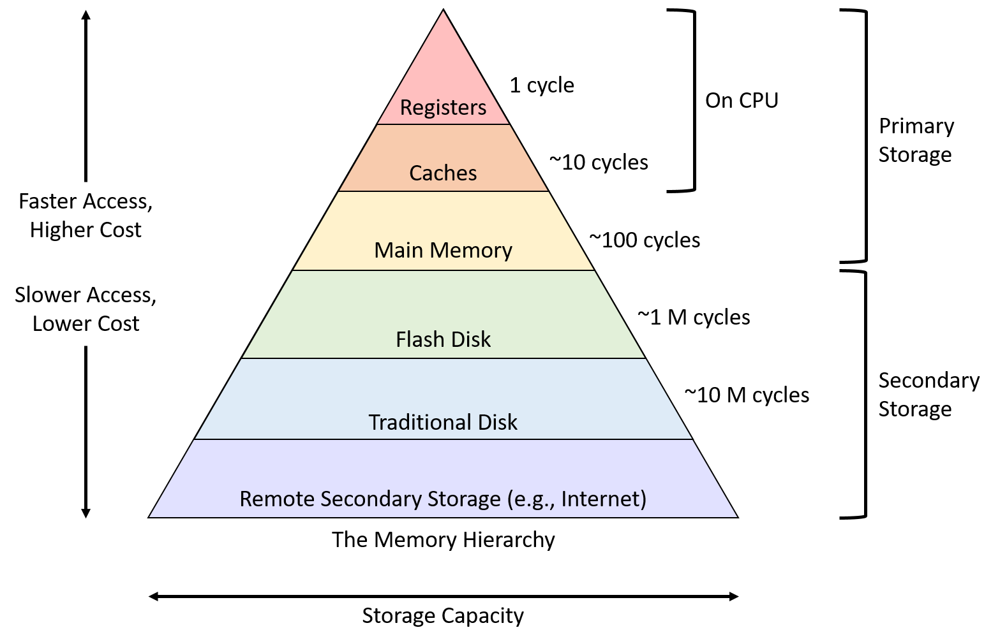

Chapter6Storage & Indexing
1Storage Hierarchy
Whenever a database uses data, that data must exist in memory. Accessing this data is relatively fast, but once the data becomes very large, it becomes impossible to fit all of it within memory. Disks are used to cheaply store all of a database’s data, but they incur a large cost whenever data is accessed or new data is written.
Note
all execution happens ultimately by reading pages from disk into memory. The number of page reads is the primary cost metric for query optimization — and indexes exist to reduce that count dramatically.


The pyramid above illustrates how storage is organized in a computer system — and it maps directly onto how a DBMS manages data:
Registers & CPU Cache (L1/L2/L3) — Extremely fast but tiny (kilobytes). The CPU works here. A DBMS has no direct control over this layer; the CPU uses it automatically when processing query operators.
Main Memory / RAM — Fast (nanoseconds), limited in size (gigabytes). This is where the DBMS buffer pool lives. All query execution happens on data loaded here — a row can only be read, compared, or joined once it is in RAM.
SSD / Flash Storage — Slower than RAM (microseconds), larger (terabytes), persistent. Many modern databases use SSDs as their primary storage layer, greatly reducing I/O latency compared to spinning disks.
HDD / Magnetic Disk — Slowest (milliseconds per read), cheapest per GB. Traditional databases were designed around this level. Because a single disk read is ~100,000× slower than a RAM access, minimizing disk I/Os is the central goal of every DBMS storage and indexing decision.
Network / Cloud Storage — Slowest tier, used for backups, archival, and distributed databases (e.g., Amazon S3, Google Cloud Storage).
2Why We Need a Buffer Manager
The Buffer Manager
The Buffer Manager is the core database management system (DBMS) module responsible for bridging the performance gap between fast main memory (RAM) and slow secondary storage (disks/SSDs).
Because database sizes frequently exceed available RAM, and because the CPU can only execute operations on data loaded into memory, the buffer manager acts as an intermediary, maintaining a pool of memory pages known as the database buffer (or buffer pool).
Whenever a database uses data, that data must exist in memory (RAM) — because the CPU can only work with data that is loaded there. Accessing data in RAM is fast (nanoseconds), but RAM is expensive and limited in size. A typical database can be hundreds of gigabytes or even terabytes, and it is simply impossible to fit all of it in memory at once.
Disks (HDDs or SSDs) solve the capacity problem — they are cheap and can store enormous amounts of data permanently. But there is a catch: accessing data on disk is thousands of times slower than accessing data in RAM.
2.1Core Responsibilities of the Buffer Manager
Space Allocation: Allocates and manages buffer space in main memory to temporarily store data blocks while they are actively being used.
Hit vs. Miss Management:
If a requested data block is already in the buffer, it immediately returns its memory address (avoiding costly disk access).
If the block is missing, it fetches the page from disk into the buffer pool.
Page Eviction & Replacement: When the buffer is full and a new page must be loaded, it decides which older blocks to evict using replacement algorithms (such as LRU).
Dirty Page Synchronization: Tracks whether pages in memory have been modified ("dirty blocks"). Before evicting a modified page, it writes the updated data back to disk to ensure durability; otherwise, unmodified pages are simply discarded.
2.2How It All Works Together
The diagram below traces what happens when you run a SQL query — from the moment the query arrives to when results are returned (and how modified data is synced back to disk).

Key Takeaways
The first time you query data → it comes from disk (slow)
The second time you query the same data → it comes from the buffer in RAM (fast — no disk access!)
If you modify data → the change happens in the buffer first, then gets written back to disk to make it permanent
The Page is the Unit of I/O
All disk reads and writes transfer exactly one page (typically 4–16 KB, configurable). Reading a single 10-byte row forces a full page to come into RAM. Query cost is measured in number of page I/Os, not rows accessed.
3Records and Page Layout
The basic unit of data for relational databases is a record (row). These records are organized into relations (tables) and can be modified, deleted, searched, or created in memory.
Every table in a relational database is stored on disk. But disk and memory work differently — the CPU can only process data that is in memory (RAM), and disk stores data in fixed-size chunks. To bridge this, three concepts stack on top of each other: a table is stored as a file, the file contains fixed-size pages, and each page holds one or more records.

Note
A record is one row (the database’s smallest unit of meaning)
A page is a fixed-size block (the disk’s smallest unit of transfer, typically 4–16 KB)
A file is a sequence of pages that stores all records of one table
When the DBMS decides how to store a table, it must answer four questions — in this exact order:
What type of file? — heap or sorted?
How are pages organized in the file? — linked list or page directory?
How are records organized on each page? — packed, bitmap, or slotted?
How is each record formatted? — fixed-length or variable-length?
3.1Choosing File Types
The file type determines how pages (and the records inside them) are ordered. The DBMS picks the type that gives the lowest I/O cost for the table’s typical workload.
There are two main types of files: Heap Files and Sorted Files. For each relation, the database chooses which file type to use based on the I/O cost of the relation’s access pattern. 1 I/O is equivalent to 1 page read from disk or 1 page write to disk, and I/O calculations are made for each file type based on the insert, delete, and scan operations in its access pattern. The file type that incurs less I/O cost is chosen.
Note
In a relational database management system (DBMS), the file type (Heap File vs. Sorted File) is not determined dynamically at runtime for every single operation, nor is there always a single static system default.
When a table (relation) is created using a statement like CREATE TABLE, the database designer or the system's storage engine decides how the relation's data will be physically stored.
Default Behavior: Many standard relational databases (like PostgreSQL, MySQL/InnoDB, or SQLite) use Heap Files as the default storage structure for standard tables because they provide fast, low-overhead insertions.
Sorted/Clustered Files: If a user or the database administrator explicitly creates a clustered index or specifies an ordered storage method (such as an index-organized table or a sorted table), the DBMS will store the records in a Sorted File structure based on a chosen key.